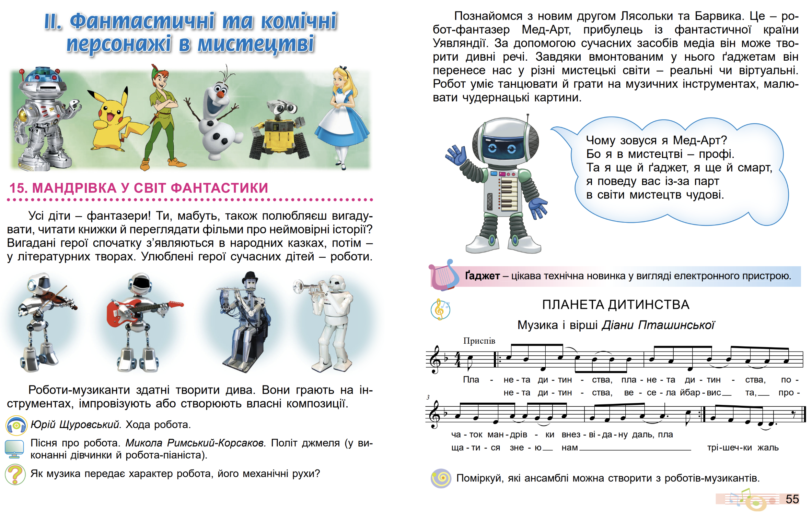

№017 - Мандрівка у світ фантастики. Перегляд: малювання робота- художника. Зображення робота з простих форм для комп’ютерної гри (кольорові олівці) (с. 56-57).

Юрій Щуровський. Хода робота.
Пісня про робота. Микола Римський-Корсаков. Політ джмеля (у ви-
конанні дівчинки й робота-піаніста).
ПЛАНЕТА ДИТИНСТВА
Музика і вірші Діани Пташинської